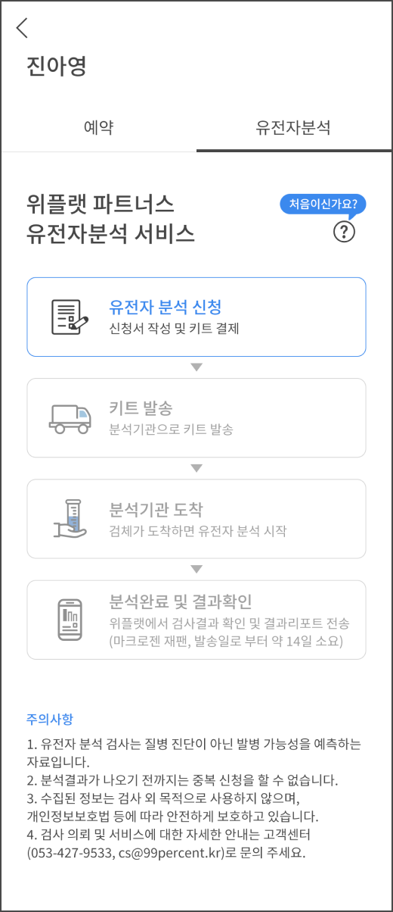
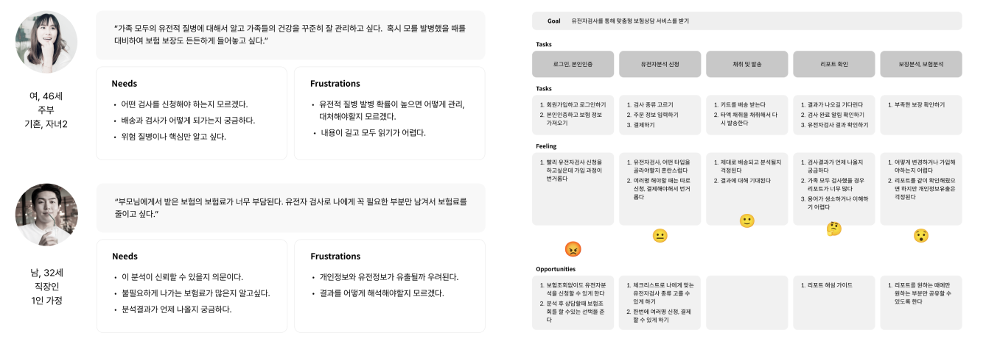
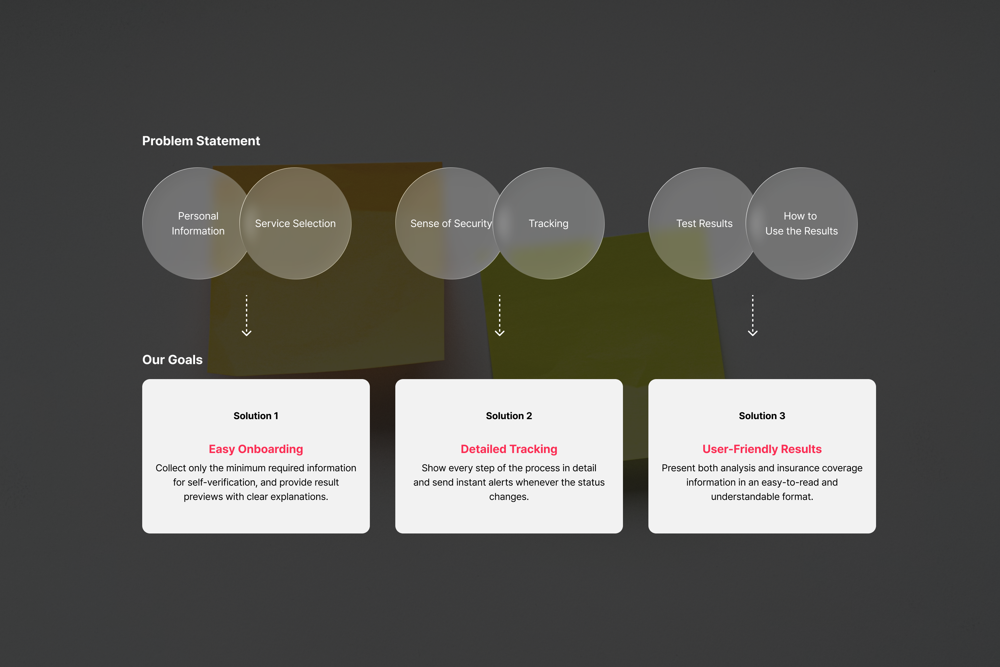
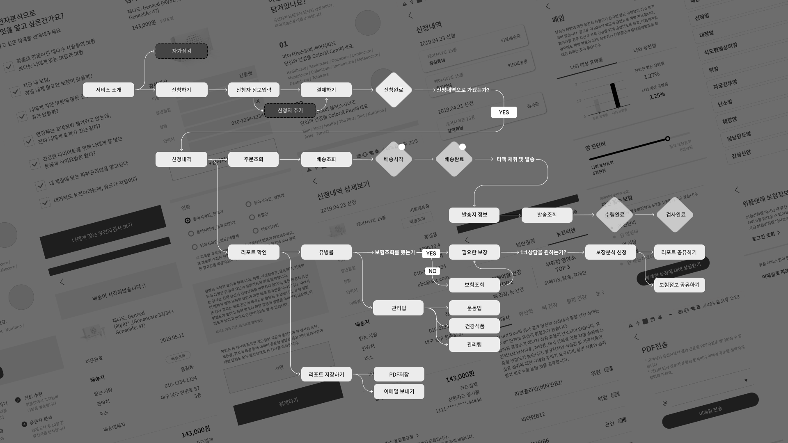
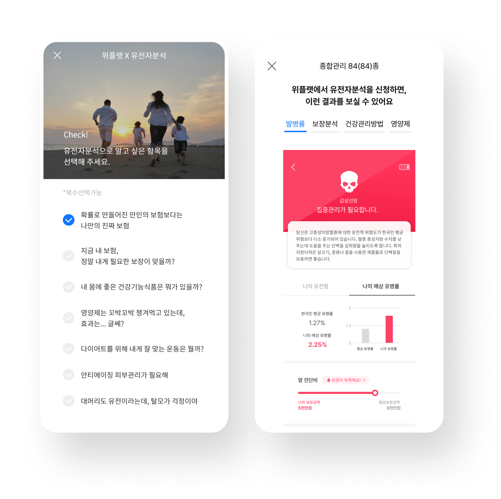
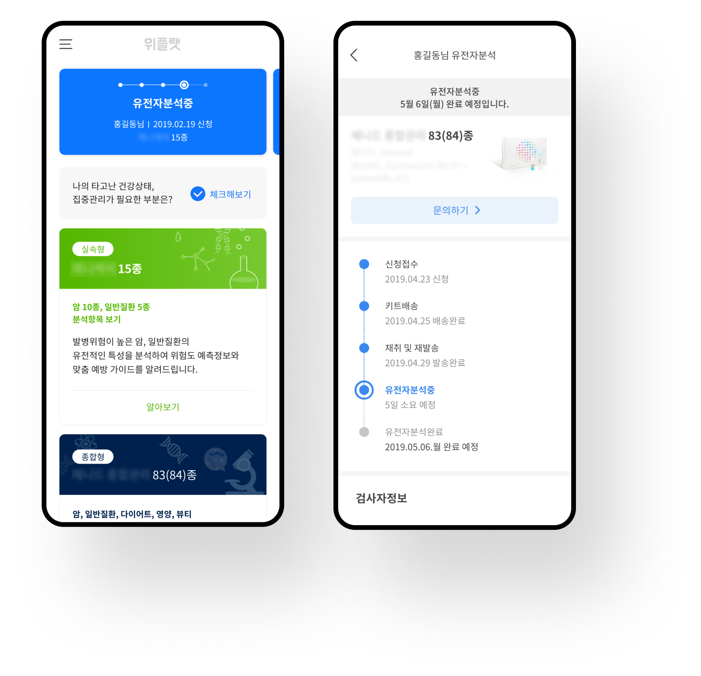
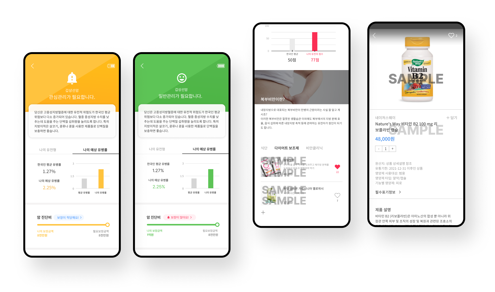
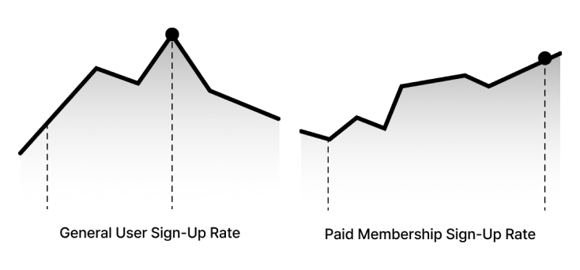

Genetic Analysis × Weplat
A service that analyzes personal genetic information to provide customized insurance recommendations. It combined a new field with insurance and was designed to attract a new segment of users. User experience was designed in collaboration and communication with genetic analysis institutions.
UX Designer
Graphic Designer
FE Developer
BE Developer
UX/UI Design 50%
Validating the Concept through MVP

We assumed that our users would be most interested in their health or insurance costs.
The first group is made up of housewives in their 40s with young children, who are highly interested in their current health and future health management.

💡 InsightUsers want to fully understand the service before making a choice. They also want a clear view of the entire process, from analysis to the final results. Once they receive the results, they want to understand them easily and know how to use them in a meaningful way.



To help first-time users easily get started, a self-check list and preview of the analysis process and results are provided. This lowers the barrier to entry and helps users choose the right service with confidence.
The entire testing process is shown transparently, allowing users to check the expected timeline for each step and track their progress in real time.

Instead of simply showing genetic data, the results visually present risk factors and prevention tips. It also connects users to personalized health supplements step by step, enhancing the usefulness of the results.

Better OKR
The key metric for this project, aimed at testing the monetization model, was to increase the number of paid members (insurance agent partners). After launch, the service achieved a 63% sign-up rate among general users and a 66% paid membership sign-up rate.
